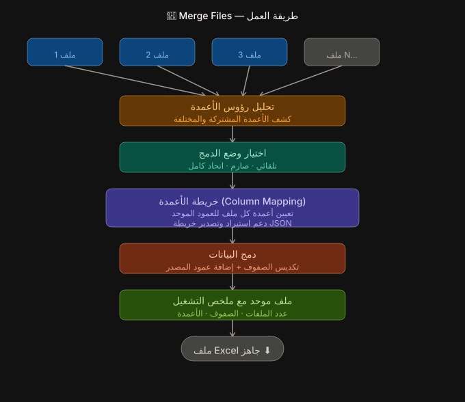

سير العمل
إدخال → معالجة → إخراج
مخطط بصري يوضح عمل Merge Files من الرفع حتى الدمج ثم التصدير.

الإدخال
ملفات Excel / CSV متعددة
ارفع ملفين أو أكثر من Excel (.xlsx, .xls) أو CSV تشترك في نفس بنية الأعمدة.
المعالجة
جمع ومحاذاة تلقائية
يقرأ Datacorex جميع الملفات، ويطابق الرؤوس بذكاء، ويجمع جميع الصفوف بالترتيب.
الإخراج
ملف Excel مدموج واحد
حمّل ملف .xlsx واحد نظيف يحتوي على جميع الصفوف من كل ملف مصدر.
الإدخال
مثال عملي
Branch_A.xlsx + Branch_B.xlsx + Branch_C.xlsx
الإخراج
ماذا تحصل
ملف رئيسي واحد يجمع كل الصفوف ويصبح جاهزًا للتحليل.